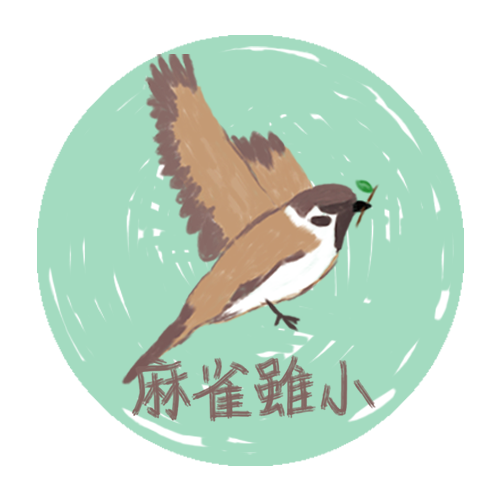

關於我們

《麻雀雖小》是專為熟齡世代設計的新聞平台，包括一系列與熟齡族息息相關的內容，分為「健康e點零」、「環境限時批」、
「新知停看聽」和「真假輕鬆辨」四個部分，分別對應「健康」、「環境」、「新知」以及「事實查核」的議題。
此外，網站也嵌入了一些為熟齡世代的日常生活提供便利服務的功能性外部連結。
譬如，透過網頁右方滑動的圖標，熟齡世代可以關注每日氣象、空氣品質以及股市漲跌。網頁最下方的「相關連結」，則收集統整了各地樂齡活動網址。
設計理念
#1榕樹

榕樹「氣生根」的樣子，像是鬍鬚，常被稱為「榕樹公公」。因此我們以「榕樹」形象代表長輩。
長壽的榕樹成為傳播科技及媒介劇變的見證者。樹冠寬廣、枝葉濃綠，能容人納蔭，廣有功德，卻也似乎與我們的世代有一些區隔。
#2麻雀

與「榕樹」這一形象對應的，是棲息在榕樹枝乾，或飛翔在它身邊的麻雀，嘰嘰喳喳，活潑雀躍。
麻雀雖小，但仍嚮往飛向天空。這裡的「麻雀」，即象徵想要用具備貼近性的語言和形式同熟齡世代溝通的我們。
#3榕樹與麻雀

榕樹扎根於此，麻雀予以它陪伴，並且銜來遠方的消息講給榕樹聽。我們想要藉助榕樹與麻雀之間的溫馨情境，譬喻熟齡世代與青年之間的交流與勾連。
受到榕樹庇蔭的麻雀，會以自己的方式回饋。我們也盼這個新聞網站作為不同世代溝通的平台，製作熟齡世代喜愛亦具品質的新聞。
麻雀團隊